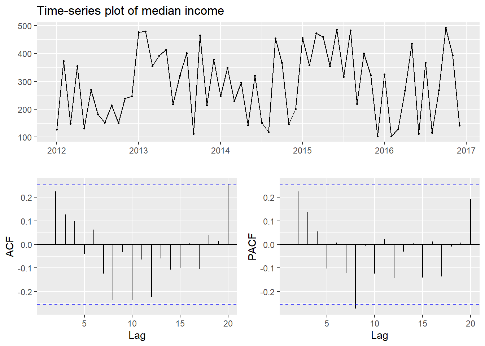
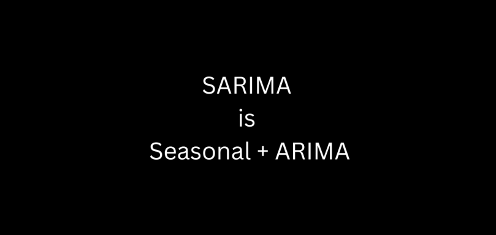
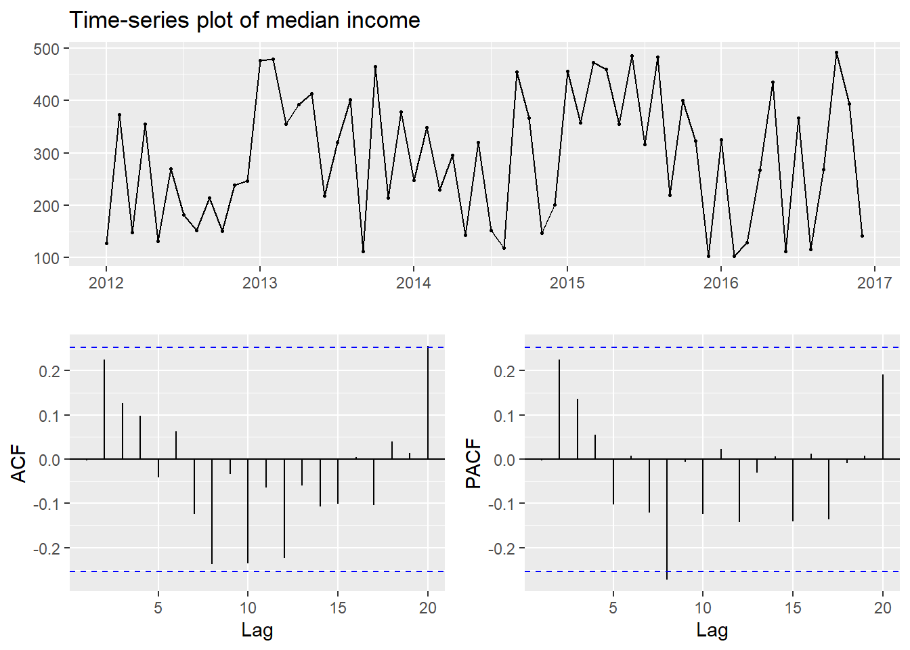

Code
# Tạo biến mới thu nhập bình quân:
income<-ts(data = runif(nrow(month_df),100,500),
frequency = 12,
start = c(2012,1))
library(forecast)
ggtsdisplay(income,
main = "Time-series plot of median income")
Bạn có thể quay lại trang đầu tiên để lấy dữ liệu gốc và các bước để chỉnh sửa dữ liệu ở Giới thiệu.
Theo nghiên cứu của (JOHN A. MILLER, MOHAMMED ALDOSARI, and NASID HABIB BARNA 2024),họ nhắc đến mô hình SARIMAX có performance tốt hơn ARIMA. Vậy SARIMAX là gì:
Định nghĩa: ARIMA đóng vai trò là nền tảng để lập mô hình dữ liệu không theo mùa (non-seasonal), trong khi SARIMA mở rộng khả năng xử lý các mẫu theo mùa.
Thành phần: SARIMAX cũng xây dựng dựa trên lý thuyết như ARIMA nhưng thêm 2 yếu tố mới là Seasonal và Exogenous variables. Còn mô hình SARMA thì chỉ có thêm yếu tố Seasonal.
Thực tế, mô hình mà R đề xuất trên bằng hàm auto.arima() cũng đã bao gồm thành phần seasonal nên ta có thể xem mô hình trên SARIMA.

Dưới đây là ví dụ về mô hình SARIMA và cách để code trong R.
Giải thích lại các thông số ta sử dụng sẽ là:
(p,d,q) là bậc AR, mức độ khác biệt - Difference và bậc MA.
(P,D,Q) là bậc seasonal của mô hình.
[s] (period arguments) là thông số cho pattern. Ví dụ trong dữ liệu này là dữ liệu của 12 tháng nên period = 12. Bạn có thể gặp dữ liệu theo quý thì period = 3, dữ liệu theo năm thì period = 1.
Vậy thì còn mô hình SARIMAX thì khác gì với SARIMA.
Để xây dựng mô hình SARIMAX thì ta cần thêm 1 biến khác không phải là biến quá khứ của dữ liệu. Gỉa sử ta tạo thêm 1 biến là thu nhập bình quân của người dân trong khoảng thời gian đó.
# Tạo biến mới thu nhập bình quân:
income<-ts(data = runif(nrow(month_df),100,500),
frequency = 12,
start = c(2012,1))
library(forecast)
ggtsdisplay(income,
main = "Time-series plot of median income")
Sau đó ta xây dựng mô hình như các bước cũ:
#Forecast by training model:
model_training2<-Arima(demand_training,,
xreg = income[1:length(demand_training)],
order = c(3,1,3),
seasonal = list(order = c(1,1,0),
period = 12),
lambda = NULL,
include.constant = TRUE)
checkresiduals(model_training2,
theme = theme_bw())
Ljung-Box test
data: Residuals from Regression with ARIMA(3,1,3)(1,1,0)[12] errors
Q* = 3.5682, df = 3, p-value = 0.312
Model df: 7. Total lags used: 10training_forecast2<-forecast(model_training2,
xreg = income[39:nrow(month_df)],
h = 21)
#Use chart for presenting the differents:
plot(training_forecast2,
main = str_glue("Model ARIMA(2,0,0)"),
xlab = "Time",
ylab = "Order Demand")
lines(demand_testing,
col = "red",
lwd = "2")
legend("topleft",
legend = c("Actual","Forecast"),
col = c("red","blue"),
box.lty = 0,
lty = 1,
cex = 1,
lwd = 2)
Và sau đó, ta sẽ sử dụng model đó để dự đoán cho tương lai. Nhìn biểu đồ ta dễ dàng kết luận mô hình không tốt. Nguyên do là tương quan giữa biến income và demand_training quá thấp, chỉ số tương quan chỉ có 0.09.
Thực tế, ta thấy mô hình do R đề xuất bằng hàm auto.arima có vẻ “overfitting” - nghĩa là mô hình tốt quá, cover hết các trường hợp nhưng có nguy cơ không cho dự đoán tốt vì dữ liệu trong tương lai biến động.
Vì vậy, ta cần xây dựng cách lựa chọn mô hình theo cách khác. Mình có kham khảo cách này trên How can I select the best SARIMA model.
## List all parameters can be appeared:
qQ=list()
for(i in 1:14) qQ[[i]]=c(i-1,0)
qQ[[15]]=c(0,1)
qQ[[16]]=c(1,1)
pP=qQ
dt_params=c()
for(i in 1:16){
for(j in 1:16){
temp=c(pP[[i]][1],1,qQ[[j]][1],pP[[i]][2],1,
qQ[[j]][2],12)
dt_params=rbind(temp,dt_params)
}
}
colnames(dt_params)=c("p","d","q","P","D","Q","T")
rownames(dt_params)=1:256
# Build all the models:
models=vector("list",256)
for(i in 1:256){
try(models[[i]]<-Arima(diff(demand_training,lag = 1),
order = dt_params[i,1:3],
seasonal = list(order=dt_params[i,4:6],
period=12),
lambda = NULL,
method="ML")) ## use MLE (maximum likelihood estimation)
}Sau khi đã xây dựng hết các mô hình bằng 256 thông số. Ta sẽ kiểm tra giả thuyết về tính độc lập trong một chuỗi thời gian nhất định (White noise) - nghĩa là kiểm tra phần dư (residuals) của mô hình có phải là random noise không ?
## Applied Ljung-Box Tests:
aa=rep(NA,256)
for(i in 1:256){
if(length(models[[i]]$residuals)>1){
a=Box.test(x = models[[i]]$residuals,
lag = 10,
type = "Box-Pierce")
z=prod(1-(a[["p.value"]]<.05))
if(z==1) aa[i]="Passed"
else aa[i]="Failed"
}
}
## Transfers all these information into 1 table:
dt_params2=data.frame(dt_params)
dt_params2$residuals=aa
aic=rep(NA,256)
model_names=rep(NA,256)
for(i in 1:256){
if(length(models[[i]]$aic)>0){
aic[i]=models[[i]]$aic
model_names[i]=as.character(models[[i]])
}
}
dt_params2$aic=aic
dt_params2$model=model_namesCuối cùng trình bày bảng 10 model tốt nhất với 2 điều kiện:
Và mô hình cuối cùng được chọn là ARIMA(2,1,0)(0,1,0)[12] với chỉ số AIC là 189.8917.
## Finally plot the table and compared the AIC and BIC value among models:
gt<-dt_params2[order(dt_params2$aic,decreasing = FALSE),][1:10,] %>%
filter(residuals == "Passed") %>% ### Just select the models with p < 0.05
relocate(model)
## Just select 10 best models:
library(gt)
library(gtExtras)Warning: package 'gtExtras' was built under R version 4.2.3gt(gt) %>%
cols_align(
align = "left",
columns = "model"
) %>%
cols_label(
model = md("**Model**"),
aic = md("**AIC value**")) %>%
tab_header(
title = md("**Ljung–Box test**"),
subtitle = glue::glue("Time from {min(training_df$datetime)} to {max(training_df$datetime)}")) %>%
tab_source_note(
source_note = "Null hypothesis: a given time series is independence") %>%
gt_theme_538() %>%
gt_highlight_rows(rows = 1,
font_weight = "normal")Ljung–Box test |
|||||||||
| Time from 2012-01-01 to 2015-03-01 | |||||||||
Model |
p | d | q | P | D | Q | T | residuals | AIC value |
|---|---|---|---|---|---|---|---|---|---|
| ARIMA(2,1,1)(0,1,0)[12] | 2 | 1 | 1 | 0 | 1 | 0 | 12 | Passed | 190.2729 |
| ARIMA(2,1,2)(0,1,0)[12] | 2 | 1 | 2 | 0 | 1 | 0 | 12 | Passed | 191.1681 |
| ARIMA(3,1,1)(0,1,0)[12] | 3 | 1 | 1 | 0 | 1 | 0 | 12 | Passed | 191.2535 |
| ARIMA(2,1,1)(0,1,1)[12] | 2 | 1 | 1 | 0 | 1 | 1 | 12 | Passed | 191.6419 |
| ARIMA(3,1,1)(0,1,1)[12] | 3 | 1 | 1 | 0 | 1 | 1 | 12 | Passed | 192.6654 |
| ARIMA(4,1,1)(0,1,0)[12] | 4 | 1 | 1 | 0 | 1 | 0 | 12 | Passed | 193.1045 |
| ARIMA(2,1,3)(0,1,0)[12] | 2 | 1 | 3 | 0 | 1 | 0 | 12 | Passed | 193.1531 |
| ARIMA(3,1,2)(0,1,0)[12] | 3 | 1 | 2 | 0 | 1 | 0 | 12 | Passed | 193.1566 |
| ARIMA(2,1,5)(0,1,0)[12] | 2 | 1 | 5 | 0 | 1 | 0 | 12 | Passed | 194.1552 |
| ARIMA(2,1,0)(0,1,0)[12] | 2 | 1 | 0 | 0 | 1 | 0 | 12 | Passed | 194.2871 |
| Null hypothesis: a given time series is independence | |||||||||
Và cuối cùng là đánh giá mô hình vừa được chọn ARIMA(2,1,0)(0,1,0)[12] với dữ liệu thực tế từ đối tượng demand_testing.
#Forecast by training model:
model_training3<-Arima(diff(demand_training,lag = 1),
order = c(2,1,1),
seasonal = list(order = c(0,1,0),
period = 12),
lambda = NULL)
training_forecast3<-forecast(model_training3,
h = 21)
#Use chart for presenting the differents:
plot(training_forecast3,
main = glue::glue("Model {gt[['model']][1]}"),
xlab = "Time",
ylab = "Order Demand")
lines(diff(demand_testing,lag = 1),
col = "red",
lwd = "2")
legend("topleft",
legend = c("Actual","Forecast"),
col = c("red","blue"),
box.lty = 0,
lty = 1,
cex = 1,
lwd = 2)Sau khi đã xây dựng mô hình, ta cần kiểm tra lại các giả thuyết như:
## Diagnostics the ARRIMA model in a short command:
checkresiduals(model_training3,
theme = theme_bw())
Ljung-Box test
data: Residuals from ARIMA(2,1,1)(0,1,0)[12]
Q* = 6.3324, df = 5, p-value = 0.2752
Model df: 3. Total lags used: 8Nếu so sánh với mô hình ban đầu theo cách auto.arima thì có vẻ mô hình này tệ hơn. Nhưng có thể ở trong tương lai, mô hình này có thể sẽ tốt hơn chăng.
## Calculating MAE metric:
sum = 0
for (i in 1:21){
sum = abs(diff(demand_testing,lag = 1)[i]-training_forecast3$mean[i])+sum
}
MAE = sum/21
## Calculating RMSE metric:
RMSE = sqrt(mean((diff(demand_testing,lag = 1) - training_forecast3$mean)^2))
## Plot the compared results:
gt(data.frame(Metric = c("MAE","RMSE"),
Manual = c(MAE,RMSE),
Auto.Arima = c(6.428828,7.534382))) %>%
cols_label(
Manual = md("**Manual method**"),
Auto.Arima = md("**Auto.Arima method**")) %>%
cols_align(
align = "center",
columns = "Manual"
) %>%
cols_align(
align = "center",
columns = "Auto.Arima"
) %>%
tab_header(
title = md("**Comparing the accuracy of forecasting**"),
subtitle = glue::glue("Forecasting from {min(testing_df$datetime)} to {max(testing_df$datetime)}")) %>%
tab_source_note(
source_note = str_glue("Between Manual and Auto ARIMA Method")) %>%
gt_theme_538() %>%
gt_highlight_cols(Auto.Arima,
fill = "blue",
alpha = 0.5)Comparing the accuracy of forecasting |
||
| Forecasting from 2015-03-01 to 2016-12-01 | ||
| Metric | Manual method |
Auto.Arima method |
|---|---|---|
| MAE | 8.652821 | 6.428828 |
| RMSE | 10.476431 | 7.534382 |
| Between Manual and Auto ARIMA Method | ||
Dưới đây là kết quả dự đoán từ mô hình trong 3 năm tiếp theo ~ 18 tháng.
demand_full<-ts(month_df$month_demand,
frequency = 12,
start = c(2012,1))
#Predicting for 18 months with 99.5% range:
predict_fit<-forecast:::forecast.Arima(model_training3,
h = 18,
level = c(99.5))
#Transform to data.frame object:
df<-predict_fit %>%
as.data.frame() %>%
mutate(Period = seq(max(month_df$datetime),
max(month_df$datetime)+months(18),
by= "1 month")[-1]) %>%
relocate(Period)gt(df[1:9,]) %>%
tab_header(
title = md("**Forecasting Order Demand**"),
subtitle = glue::glue("Time from {max(month_df$datetime)} to {max(month_df$datetime)+months(9)}")) %>%
tab_source_note(
source_note = glue::glue("Method: Model {gt[['model']][1]}")) %>%
gt_theme_538()
gt(df[10:18,]) %>%
tab_header(
title = md("**Forecasting Order Demand**"),
subtitle = glue::glue("Time from {max(month_df$datetime)+months(9)} to {max(month_df$datetime)+months(18)}")) %>%
gt_theme_538()
#Plot the forecast value
forecast:::plot.forecast(predict_fit,
xlab ="Time",
ylab = "Order demand")Forecasting Order Demand |
|||
| Time from 2016-12-01 to 2017-09-01 | |||
| Period | Point Forecast | Lo 99.5 | Hi 99.5 |
|---|---|---|---|
| 2017-01-01 | -0.3025843 | -25.51830 | 24.913133 |
| 2017-02-01 | -9.4633515 | -36.62171 | 17.695007 |
| 2017-03-01 | 6.7844395 | -22.34186 | 35.910740 |
| 2017-04-01 | 4.8964391 | -26.63581 | 36.428686 |
| 2017-05-01 | -24.2754428 | -55.88982 | 7.338937 |
| 2017-06-01 | 18.5468600 | -13.98819 | 51.081910 |
| 2017-07-01 | 8.3588213 | -24.30408 | 41.021726 |
| 2017-08-01 | -5.8293675 | -38.81299 | 27.154252 |
| 2017-09-01 | 3.9261880 | -29.17795 | 37.030330 |
| Method: Model ARIMA(2,1,1)(0,1,0)[12] | |||
Forecasting Order Demand |
|||
| Time from 2017-09-01 to 2018-06-01 | |||
| Period | Point Forecast | Lo 99.5 | Hi 99.5 |
|---|---|---|---|
| 2017-10-01 | 10.1401433 | -22.96736 | 43.24765 |
| 2017-11-01 | -13.8715418 | -47.12279 | 19.37971 |
| 2017-12-01 | 16.1556198 | -17.09157 | 49.40281 |
| 2018-01-01 | -0.2720208 | -41.40027 | 40.85623 |
| 2018-02-01 | -8.8038655 | -50.82244 | 33.21471 |
| 2018-03-01 | 7.2730026 | -35.80101 | 50.34702 |
| 2018-04-01 | 5.0611881 | -39.57847 | 49.70085 |
| 2018-05-01 | -23.8592527 | -68.57801 | 20.85951 |
| 2018-06-01 | 19.0576303 | -26.14966 | 64.26492 |
Vậy tiếp theo ta sẽ vào phần phân tích ở trang Machine Learning.